Ratio and proportion, Variation¶
Ratio and proportion¶
Terms such as ,
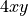
,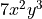
are polynomials with just one term. They are called monomials. The degree of a monomial is the sum of the powers on the variables. Thus, the degree of , , and are 1, 2, and 5, respectively. A constant without any variables such as has degree 0 (it is as if the powers of variables are all 0).Look at the following example problems:
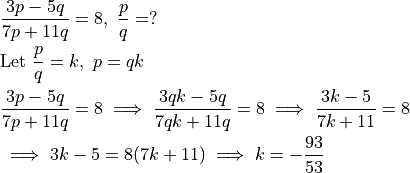
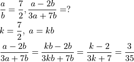
In both cases, a fraction is given and one needs to find another fraction. The key feature of these fractions is that the numerator and the denominator are made from two variable monomials of the same degree. In this case, the above approach of setting one variable to be proportional to the other variable works because only the constant of proportionality - k - remains in the fractions.
Here is another example:
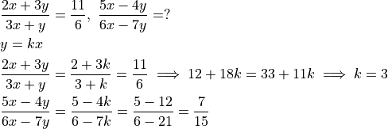
Another example where constant of proportionality is useful:
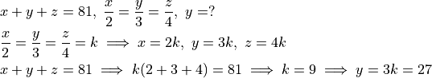
Variation¶
In problem involving variations, the known information is genrally how one variable varies when another variable is varied.
For example, if a car is driven at a constant speed for twice as long, the distance covered will be twice as long (if everything else such as speed is held constant). This is written as
Distance is directly proportional to time or time is direction proportional to distance. We know that doubling the time will double the distance. However, we don’t know how much distance is covered in a given time. We can find this out by converting the propotionality to an equality. For this, we need the speed. Distance covered (d) is speed (r) times the time (t).
This constant value that needs to be multiplied to convert proportionality to an equality is called the constant of proportionality. In this example, it is the speed. In a general example, it will have some other meaning. Nonetheless, it is needed to convert proportionality to an equality.
Here is another example:
The gravitational force (F) that the sun exerts on a planet is directly proportional to the mass of the planet (m) and inversely proportional to the square of the distance of the planet from the sun (d). In other words, if distance is held constant, doubling the mass doubles the force. If mass is held constant, doubling the distance drops the force to a quarter of the original force.
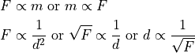
Note how the second proportionality was reversed. To convert this into a single formula, a constant of proportionality - k - needs to be introduced.
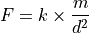
Some more examples:
25 horses (H) eat 5 bags of corn (B) in 12 days (D), how many bags of corn will 10 horses eat in 18 days?
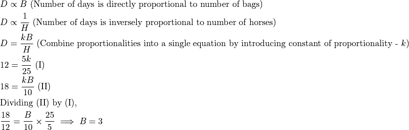
A bundle of hay (H) can be finished by 3 cows (c) in 8 days (d). In how many days will 2 cows finish the bundle if all the cows eat at the same rate?
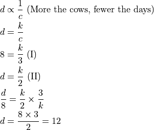
What happens if we introduce more variables or write the proportionality in a different way? Let us try.
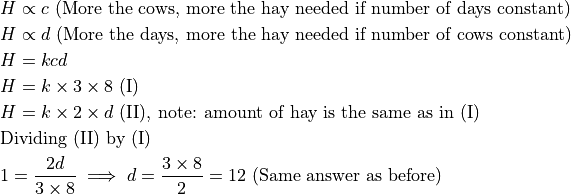
Another example:
A person’s BMI (body mass index) varies directly as their weight and inversely as the square of their height. Given a person who weighs 180 pounds and is 60 inches tall has a BMI of 35.2, what is the BMI for someone who is 150 pounds and 68 inches tall?
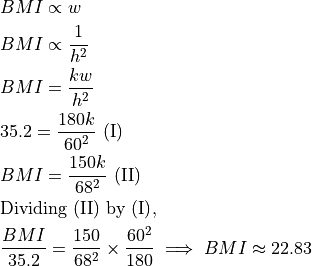